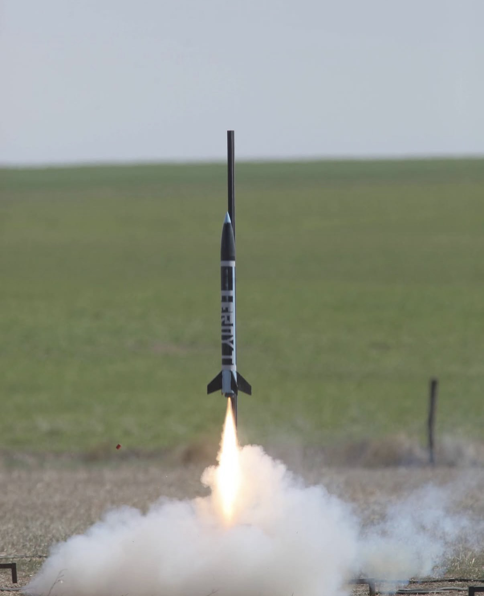

<section class="py-20 bg-white dark:bg-gray-900">
  <div class="max-w-6xl mx-auto px-6">
    <h1 class="text-4xl md:text-5xl font-bold text-center mb-12 text-gray-900 dark:text-gray-100 tracking-tight">
      Tripoli L1 Certification HP Rocket
    </h1>

    <!-- Overview Section with Integrated Pad Photo -->
    <div class="bg-gray-50 dark:bg-gray-800/60 backdrop-blur-sm rounded-xl p-6 border border-gray-200 dark:border-gray-600 mb-12 flex flex-col md:flex-row items-center gap-6">
      <div class="flex-1">
        <h2 class="text-2xl font-mono text-emerald-600 dark:text-emerald-400 mb-4">Overview</h2>
        <p class="text-gray-900 dark:text-gray-100 mb-4">
          Built and launched a Level 1 (L1) high-powered rocket to achieve Tripoli Rocketry Association certification. Utilized machine shop tools and techniques for fabrication, ensuring structural integrity and flight stability.
        </p>
        <p class="text-sm italic text-gray-600 dark:text-gray-300">
          Goals: Achieve stable flight, validate design through simulation, and collect performance data for certification.
        </p>
      </div>
      <figure class="flex-1 max-w-md">
        
        <figcaption class="text-sm text-gray-600 dark:text-gray-300 italic mt-2 text-center">Rocket setup on the launch pad</figcaption>
      </figure>
    </div>

    <!-- My Role Section -->
    <div class="bg-gray-50 dark:bg-gray-800/60 backdrop-blur-sm rounded-xl p-6 border border-gray-200 dark:border-gray-600 mb-12">
      <h2 class="text-2xl font-mono text-emerald-600 dark:text-emerald-400 mb-4">My Role: Active Member & Builder</h2>
      <p class="text-gray-900 dark:text-gray-100 mb-4">
        Served as an active member in the Mizzou Space Program shop, contributing to the certification process from design to launch. Focused on hands-on fabrication and analysis to meet Tripoli L1 requirements.
      </p>
    </div>

    <!-- Technical Contributions Section with Integrated Flight Photo -->
    <div class="bg-gray-50 dark:bg-gray-800/60 backdrop-blur-sm rounded-xl p-6 border border-gray-200 dark:border-gray-600 mb-12 flex flex-col md:flex-row items-center gap-6">
      <div class="flex-1">
        <h2 class="text-2xl font-mono text-emerald-600 dark:text-emerald-400 mb-4">Technical Contributions</h2>
        <ul class="space-y-2 text-sm text-gray-600 dark:text-gray-300">
          <li>› 3D printed fin assembly for precise aerodynamic components.</li>
          <li>› Modeled rocket in simulation software to predict performance.</li>
          <li>› Performed Center of Balance (CB) and Center of Pressure (CP) calculations for stability.</li>
          <li>› Conducted optimal altitude analysis based on selected rocket motor specifications.</li>
        </ul>
      </div>
      <figure class="flex-1 max-w-md">
        
        <figcaption class="text-sm text-gray-600 dark:text-gray-300 italic mt-2 text-center">Rocket during ascent</figcaption>
      </figure>
    </div>

    <!-- Launch & Recovery Section with Integrated Recovery Photo -->
    <div class="bg-gray-50 dark:bg-gray-800/60 backdrop-blur-sm rounded-xl p-6 border border-gray-200 dark:border-gray-600 mb-12 flex flex-col md:flex-row-reverse items-center gap-6">
      <div class="flex-1">
        <h2 class="text-2xl font-mono text-emerald-600 dark:text-emerald-400 mb-4">Launch & Recovery</h2>
        <p class="text-gray-900 dark:text-gray-100 mb-4">
          Successfully launched the rocket, achieving certification. Post-flight recovery confirmed design efficacy and provided data for future iterations.
        </p>
      </div>
      <figure class="flex-1 max-w-md">
        
        <figcaption class="text-sm text-gray-600 dark:text-gray-300 italic mt-2 text-center">Post-flight recovery</figcaption>
      </figure>
    </div>

    <div class="text-center">
      <app-button variant="secondary" routerLink="/projects">Back to Projects</app-button>
    </div>
  </div>
</section>